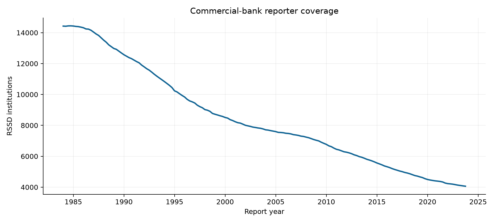

Snapshot fbc0b7b5a2c46fbcc0b5; generated from validated raw hashes and processed manifests.
| Dataset | Coverage | Verified scope | Evidence |
|---|---|---|---|
| Raw source snapshot | fbc0b7b5a2c46fbcc0b5 | 425 files; 1.83 GB retained | data/manifests/raw_manifest.csv |
| New York Fed source | 1959Q4–2026Q1 | 2,557,391 source bank-quarters | data/manifests/ny_coverage.json |
| Commercial-bank Core Panel | 1984Q1–2026Q1 | 1,384,379 rows; 1,383,380 positive asset/deposit rows | data/manifests/core_quality.json |
| FFIEC Enhanced source | 2017Q1–2026Q2 | 189,811 raw bank-quarters; 161,780 matched Core rows | data/manifests/ffiec_quality.json |
| FDIC institution history | 1970 onward | 185,483 events; 4,117 failure rows | data/manifests/entity_quality.json |
| ALFRED vintages | 2001Q1–2026Q2 | 262 quarter-origin snapshots | data/manifests/macro_quality.json |
| FR Y-9C extension | 2001Q1–2021Q1 | 93,374 separate BHC-quarters | data/manifests/y9c_quality.json |
The New York Fed, FFIEC CDR, FDIC BankFind, FRED/ALFRED, and Chicago Fed are the official public sources. The raw manifest gives each file URL, hash, period, and vintage.

| Check | Observed result | Interpretation |
|---|---|---|
| Duplicate RSSD-quarter keys | 0 | Hard check passed |
| Nonpositive assets | 2 | Excluded from supervised labels |
| Nonpositive deposits | 991 | Excluded from supervised labels |
| Asset = liabilities + equity gap >1% | 1,525 / 1,384,369 | Investigate; raw values retained |
| Income join coverage | 99.9993% | YTD flows converted only when prior quarter exists |
| Direct FFIEC uninsured field overall | 17.1% | Form-dependent structural missingness; no zero fill |
| FFIEC form | Bank quarters | Coverage |
|---|---|---|
| 031 | 3,011 | 83.7% |
| 041 | 51,292 | 41.7% |
| 051 | 135,508 | 6.3% |
The New York Fed file is a currently restated historical snapshot, and the FFIEC bulk ZIPs are retrieval snapshots. A 45-day filing lag produces pseudo-point-in-time forecasts but does not reconstruct old bank amendments. Direct FFIEC uninsured estimates are not interchangeable with the historical insured-deposit proxy. H.8 remains an aggregate weekly series. Source and form scope are explicit in the feature registry.
44,282 structural events from FDIC history/failure records matched a 1984+ bank ID within two quarters. Matching confidence and unmatched cases remain in entity_events.parquet. A disappearing Call Report row is not a failure label.
The NIC current holding-company download endpoint presented a CAPTCHA in this environment. Official Chicago Fed historical FR Y-9C files through 2021Q1 were acquired and parsed separately. This leaves recent BHC external validation unavailable from that route.
Numerical facts are stored in artifacts/results.duckdb tables data_quality and data_coverage, with detailed manifests under data/manifests/.